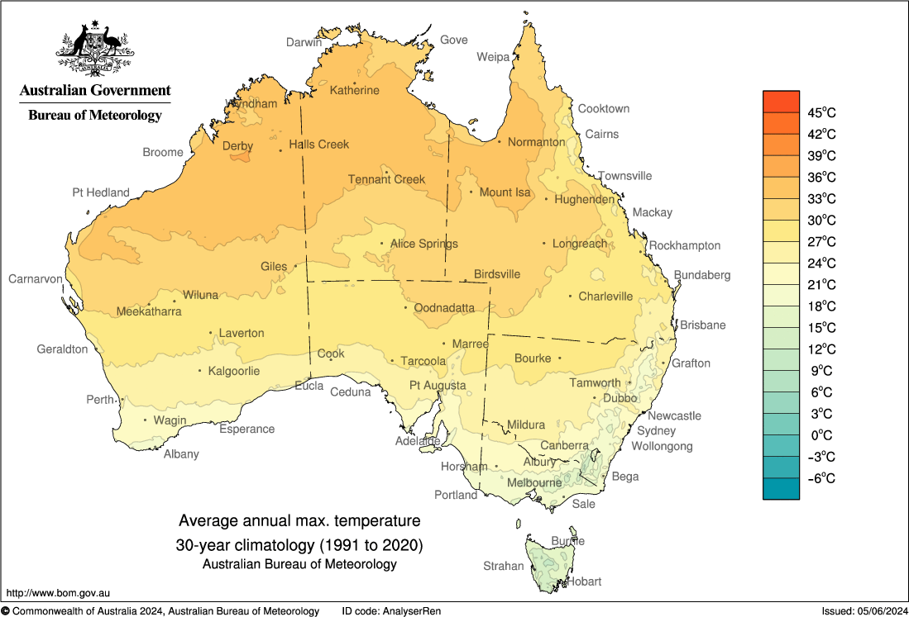
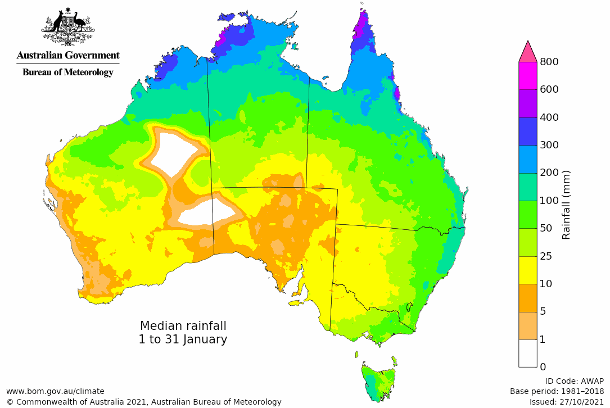
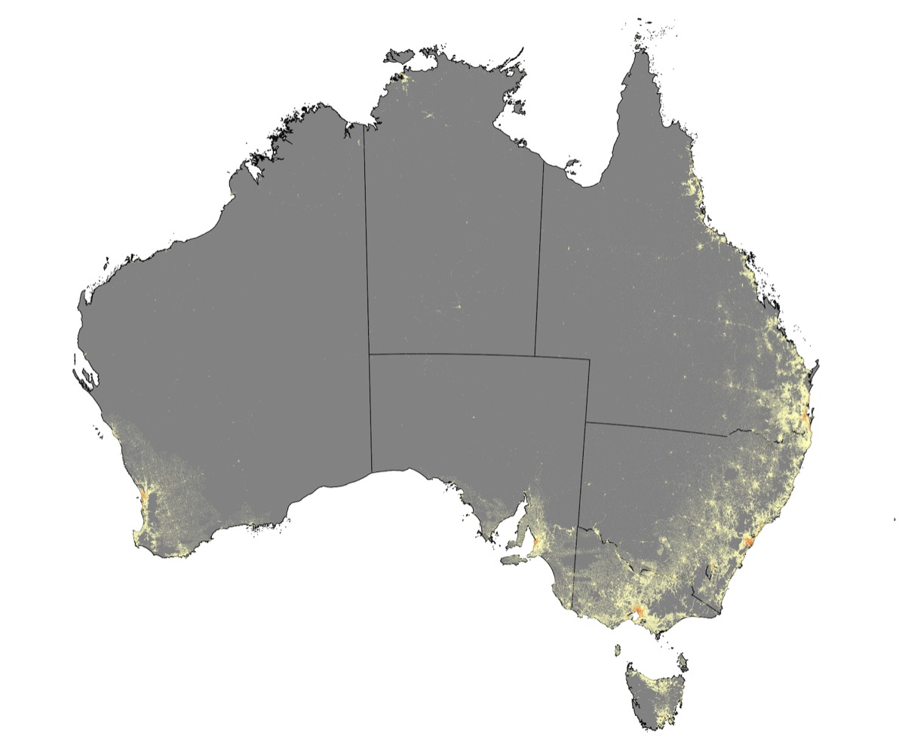

<!DOCTYPE html>
<html lang="en-AU">
<head>
<meta charset="utf-8">
<meta name="viewport" content="width=device-width, initial-scale=1, viewport-fit=cover">
<title>The Sunrise Islands — Where Would You Live?</title>
<meta name="description" content="A Year 3/4 geography game about where Australians live, and why.">
<style>
/* ============================================================
   CSS
   ============================================================ */
:root{
  --ink:#22303a; --ink-soft:#4a5c68;
  --paper:#fffaf0; --card:#ffffff; --line:#d9cdb4;
  --good:#2e7d4f; --bad:#b4472e; --warm:#e08a2e; --teal:#1d7a8c;
  --focus:#0b6fb8;
  --trop:#2f8f5b; --desert:#c4643a; --grass:#b08d1e; --temp:#3f7fae;
  --r:16px;
}
*{box-sizing:border-box}
html,body{margin:0;padding:0}
body{background:var(--paper);color:var(--ink);
  font:400 18px/1.55 -apple-system,BlinkMacSystemFont,"Segoe UI",Roboto,"Helvetica Neue",Arial,sans-serif;
  -webkit-text-size-adjust:100%;padding:0 0 90px}
#app{max-width:960px;margin:0 auto;padding:20px 18px}
h1{font-size:1.9rem;line-height:1.2;margin:0 0 .4em;letter-spacing:-.01em}
h1:focus{outline:none}
h1:focus-visible{outline:3px solid var(--focus);outline-offset:6px;border-radius:6px}
h2{font-size:1.3rem;margin:1.3em 0 .5em}
h3{font-size:1.08rem;margin:0 0 .3em}
p{margin:0 0 .9em;max-width:60ch}
.lede{font-size:1.15rem}
.muted{color:var(--ink-soft)}
.center{text-align:center}

button{font:inherit;color:inherit}
.btn{display:inline-flex;align-items:center;justify-content:center;gap:.5em;min-height:56px;
  padding:14px 28px;background:var(--teal);color:#fff;border:none;border-radius:var(--r);
  font-size:1.1rem;font-weight:700;cursor:pointer;box-shadow:0 3px 0 #145c6a;
  -webkit-tap-highlight-color:transparent}
.btn:hover{filter:brightness(1.08)}
.btn:active{transform:translateY(2px);box-shadow:0 1px 0 #145c6a}
.btn[disabled]{background:#c3cdd2;box-shadow:0 3px 0 #a9b5bb;color:#5d6a70;cursor:not-allowed;transform:none}
.btn.secondary{background:#fff;color:var(--teal);border:2px solid var(--teal);box-shadow:0 3px 0 #cfe2e6}
.btn.warmbtn{background:var(--warm);box-shadow:0 3px 0 #a8641c}
.btn.big{font-size:1.25rem;min-height:64px;padding:16px 34px}
:focus-visible{outline:3px solid var(--focus);outline-offset:3px}
.actions{display:flex;flex-wrap:wrap;gap:14px;margin-top:24px;align-items:center}

.card{background:var(--card);border:2px solid var(--line);border-radius:var(--r);padding:20px 22px;margin:0 0 18px}
.card h2{margin-top:0}
.step{font-size:.85rem;text-transform:uppercase;letter-spacing:.08em;font-weight:800;color:var(--ink-soft);margin:0 0 4px}

/* read aloud */
#speakbar{position:fixed;right:16px;bottom:16px;z-index:50}
#speakbtn{display:flex;align-items:center;gap:8px;min-height:56px;padding:12px 20px;border-radius:999px;
  background:#fff;color:var(--teal);border:3px solid var(--teal);font-weight:800;font-size:1rem;
  cursor:pointer;box-shadow:0 3px 10px rgba(0,0,0,.18)}
#speakbtn.on{background:var(--teal);color:#fff}

/* islands */
ol.steps{margin:0;padding:0 0 0 1.5em}
ol.steps li{margin:0 0 .6em;padding-left:.25em;font-size:1.08rem}
ol.steps li::marker{font-weight:800;color:var(--teal)}
ul.things{list-style:none;margin:14px 0 0;padding:0}
ul.things li{display:flex;gap:13px;align-items:flex-start;margin:0 0 12px;font-size:1.06rem}
ul.things li:last-child{margin-bottom:0}
ul.things .ic{font-size:1.5rem;line-height:1.15;flex:0 0 auto;width:1.4em;text-align:center}
/* Rainfall is an AMOUNT, not a rating, so it must not look like the green
   rating dots - otherwise "most rain" would read as "best island". */
.rainrow{display:flex;align-items:center;gap:9px;margin:12px 0 0;font-size:.97rem;font-weight:600}
.rainrow .ic{font-size:1.1rem;width:1.3em;text-align:center;flex:0 0 auto}
.bar{display:inline-flex;gap:2px;flex:0 0 auto}
.bar i{width:9px;height:15px;border-radius:2px;background:#d3e2ea;display:block}
.bar i.on{background:#3f8fbf}
.mm{font-variant-numeric:tabular-nums;white-space:nowrap}
/* Water and shelter swing wildly between spots on the same island, so a single
   island number would lie. Show the spread instead - that IS the lesson. */
.vhead{border-top:1px dashed var(--line);margin:11px 0 7px;padding:9px 0 0;font-size:.76rem;
  text-transform:uppercase;letter-spacing:.06em;font-weight:800;color:var(--ink-soft)}
ul.varies{list-style:none;margin:0;padding:0}
ul.varies li{display:flex;align-items:center;gap:9px;font-size:.9rem;margin:0 0 5px;font-weight:600}
ul.varies li:last-child{margin-bottom:0}
ul.varies .ic{font-size:1.05rem;width:1.3em;text-align:center;flex:0 0 auto}
ul.varies .rng{color:var(--teal)}
ul.cscores{list-style:none;margin:12px 0 0;padding:0}
ul.cscores li{display:flex;align-items:center;gap:9px;margin:0 0 7px;font-size:.97rem;font-weight:600}
ul.cscores li:last-child{margin-bottom:0}
ul.cscores .ic{font-size:1.1rem;width:1.3em;text-align:center;flex:0 0 auto}
ul.cscores .dots{flex:0 0 auto}
.sr{position:absolute;width:1px;height:1px;overflow:hidden;clip:rect(0 0 0 0);white-space:nowrap}
/* Always 2x2, so the four islands read as one set to compare, not 3 + 1. */
.isles{display:grid;gap:16px;grid-template-columns:1fr 1fr;align-items:stretch}
@media (max-width:620px){.isles{grid-template-columns:1fr}}
.isle{display:block;width:100%;text-align:left;background:#fff;border:3px solid var(--line);
  border-radius:var(--r);padding:16px 18px;cursor:pointer;min-height:56px}
.isle:hover{border-color:var(--teal);background:#f4fbfc}
.isle .flag{font-size:2.2rem;line-height:1;display:block;margin-bottom:4px}
.isle h3{margin:4px 0 6px;font-size:1.2rem}
.isle dl{margin:10px 0 0;display:grid;grid-template-columns:auto 1fr;gap:5px 10px;font-size:.95rem}
.isle dt{color:var(--ink-soft)}
.isle dd{margin:0;font-weight:600}
.isle.done{opacity:.7;border-style:dashed;background:#f6f4ee}
.zone{display:inline-block;color:#fff;border-radius:999px;padding:3px 13px;font-size:.8rem;font-weight:800}
.z-Tropical{background:var(--trop)} .z-Desert{background:var(--desert)}
.z-Grassland{background:var(--grass)} .z-Temperate{background:var(--temp)}

/* map */
.maplayout{display:grid;grid-template-columns:1fr 340px;gap:22px;align-items:start}
@media (max-width:880px){.maplayout{grid-template-columns:1fr}}
.mapwrap{background:#2e7ba8;border:3px solid #245f83;border-radius:var(--r);overflow:hidden;line-height:0}
svg.map{width:100%;height:auto;display:block;touch-action:manipulation}
.tile{cursor:pointer}
.pin{cursor:pointer}
.pin circle.hit{fill:transparent}
.pin:focus{outline:none}
.pin:focus-visible circle.ring{stroke:#0b6fb8;stroke-width:2.2}
.climate{background:#f3f8fb;border:2px solid #bcd8e6;border-radius:var(--r);padding:12px 16px;margin:0 0 14px}
.climate dl{margin:0;display:grid;grid-template-columns:auto 1fr;gap:5px 12px;font-size:.98rem}
.climate dt{color:var(--ink-soft);white-space:nowrap}
.climate dd{margin:0;font-weight:600}
.progress{display:inline-block;background:#fff3d6;border:2px solid var(--warm);border-radius:999px;
  padding:6px 16px;font-weight:700;font-size:.95rem;margin-bottom:12px}
.progress.done{background:#dff2e6;border-color:var(--good);color:#1d5c39}

/* factors */
.factor{display:grid;grid-template-columns:1fr auto;gap:2px 14px;align-items:baseline;
  padding:9px 0;border-bottom:1px solid #eee6d5}
.factor:last-of-type{border-bottom:none}
.factor .fname{font-weight:700}
.factor .fval{white-space:nowrap;font-weight:700}
.factor .fnote{grid-column:1/-1;font-size:.95rem;color:var(--ink-soft);margin:0}
.dots{letter-spacing:.14em;font-size:1.05rem}
.dots .on{color:var(--good)}
.dots .off{color:#c9cfd3}
.s1 .dots .on{color:var(--warm)}

/* ledger */
.ledger{width:100%;border-collapse:collapse;margin:4px 0;font-variant-numeric:tabular-nums}
.ledger th{text-align:left;font-size:.8rem;text-transform:uppercase;letter-spacing:.06em;
  color:var(--ink-soft);padding-bottom:6px;font-weight:700}
.ledger td{padding:9px 0;border-bottom:1px solid #eee6d5}
.ledger td.num{text-align:right;font-weight:800;white-space:nowrap}
.ledger tr.doubled td{background:#fff6e2}
.ledger tr.doubled td:first-child{box-shadow:inset 4px 0 0 var(--warm)}
.ledger tr.choicerow td{background:#eef6fb}
.ledger tr.choicerow td:first-child{box-shadow:inset 4px 0 0 var(--teal)}
.ledger tr.sum td{border-bottom:none;border-top:3px double var(--ink);font-size:1.15rem;font-weight:800;padding-top:11px}
.plus{color:var(--good)} .minus{color:var(--bad)}
.x2{display:inline-block;background:var(--warm);color:#fff;border-radius:6px;padding:1px 7px;font-size:.8rem;margin-left:5px}
.popline{font-size:1.5rem;font-weight:800;margin:12px 0 0;text-align:center}
.popline .arrow{color:var(--ink-soft);margin:0 .35em}
.banner{border-radius:var(--r);padding:13px 18px;margin:0 0 16px;font-weight:700}
.banner.year{background:#e8f2f7;border:2px solid #a9cfe0}
.banner.warn{background:#fdece7;border:2px solid #e8b3a3}

/* two meters */
.meters{display:grid;grid-template-columns:1fr 1fr;gap:14px;margin:6px 0 4px}
@media (max-width:560px){.meters{grid-template-columns:1fr}}
.meter{border:3px solid var(--line);border-radius:var(--r);padding:16px;text-align:center;background:#fff}
.meter .mlabel{font-size:.85rem;text-transform:uppercase;letter-spacing:.07em;font-weight:800;color:var(--ink-soft)}
.meter .mbig{font-size:2.6rem;font-weight:800;line-height:1.05;margin:4px 0 2px}
.meter .mstars{font-size:1.9rem;letter-spacing:.12em;color:var(--warm);line-height:1.2;margin:6px 0 2px}
.meter .mword{font-weight:800;font-size:1.1rem}
.meter .mnote{font-size:.92rem;color:var(--ink-soft);margin:4px 0 0}
.meter.people{border-color:#a9cfe0;background:#f3f8fb}
.meter.room{border-color:#e8cfa3;background:#fffaf0}

/* graph */
.graph{display:flex;align-items:flex-end;gap:8px;height:120px;margin:16px 0 4px}
.graph .bar{flex:1;display:flex;flex-direction:column;justify-content:flex-end;align-items:center;height:100%}
.graph .fill{width:100%;background:var(--teal);border-radius:6px 6px 0 0;min-height:3px;transition:height .5s ease}
.graph .fill.start{background:#b9c6cc}
.graph .fill.zero{background:var(--bad)}
.graph .n{font-size:.85rem;font-weight:800;margin-bottom:4px}
.graph .yl{font-size:.75rem;color:var(--ink-soft);margin-top:6px}
@media (prefers-reduced-motion:reduce){.graph .fill{transition:none}}

/* choices */
.choices{display:grid;gap:12px;margin:16px 0}
.choices.four{grid-template-columns:repeat(4,1fr)}
@media (max-width:680px){.choices.four{grid-template-columns:1fr 1fr}}
.choice{display:flex;flex-direction:column;align-items:center;justify-content:center;gap:6px;
  min-height:72px;padding:14px;text-align:center;background:#fff;border:3px solid var(--line);
  border-radius:var(--r);font-size:1.05rem;font-weight:600;cursor:pointer}
.choice:hover{border-color:var(--teal);background:#f4fbfc}
.choice .big-emoji{font-size:2rem;line-height:1}

/* decision card */
.decision{background:#fffdf6;border:3px solid var(--warm);border-radius:var(--r);padding:20px;margin:0 0 18px}
.decision h2{margin:0 0 4px;font-size:1.25rem}
.opts{display:grid;gap:11px;margin-top:14px}
.opt{display:flex;align-items:center;gap:12px;min-height:62px;padding:13px 16px;text-align:left;
  background:#fff;border:3px solid var(--line);border-radius:var(--r);font-size:1.05rem;
  font-weight:600;cursor:pointer;width:100%}
.opt:hover{border-color:var(--warm);background:#fffaf0}
.opt .mark{flex:0 0 auto;font-size:1.3rem;width:1.1em;text-align:center}
.opt.chosen{border-color:var(--teal);background:#eef6fb}
.opt.best{border-color:var(--good);background:#e4f4ea}
.opt.dim{opacity:.5}
.delta{margin-left:auto;font-weight:800;white-space:nowrap}
.feedback{border-radius:var(--r);padding:14px 18px;margin-top:10px;font-weight:600;
  background:#e4f4ea;border:2px solid var(--good)}
.feedback.soft{background:#fff6e2;border-color:var(--warm)}

/* compare + tables */
table.rank{width:100%;border-collapse:collapse;margin-top:6px}
table.rank th,table.rank td{text-align:left;padding:10px 8px;border-bottom:1px solid #eee6d5}
table.rank th{font-size:.8rem;text-transform:uppercase;letter-spacing:.06em;color:var(--ink-soft)}
table.rank td.num{text-align:right;font-weight:800;font-size:1.05rem}
table.rank .stars{color:var(--warm);font-weight:800;white-space:nowrap}
.tablescroll{overflow-x:auto}

/* australia */
.legend{display:grid;grid-template-columns:repeat(auto-fit,minmax(190px,1fr));gap:6px 16px;margin:10px 0 0;padding:0;list-style:none}
.legend li{display:flex;gap:8px;align-items:flex-start;font-size:.92rem}
.legend .sw{width:20px;height:20px;border-radius:5px;border:1px solid rgba(0,0,0,.2);flex:0 0 auto;margin-top:2px}
details.key{margin-top:12px}
details.key summary{cursor:pointer;font-weight:700;padding:10px 0;min-height:44px;display:flex;align-items:center}

/* writing */
.write label{display:block;font-weight:800;font-size:1.15rem;margin:0 0 6px}
.starter{font-weight:700;color:var(--teal);margin:0 0 6px}
textarea{width:100%;min-height:110px;padding:14px;font:inherit;font-size:1.05rem;line-height:1.5;
  border:3px solid var(--line);border-radius:var(--r);background:#fff;resize:vertical}
textarea:focus{border-color:var(--teal);outline:none}
.bank{display:flex;flex-wrap:wrap;gap:8px;margin:10px 0 0}
.word{min-height:44px;padding:8px 14px;border:2px solid #bcd8e6;background:#f3f8fb;border-radius:999px;
  font-weight:700;font-size:.95rem;cursor:pointer}
.word:hover{background:#e2eff6;border-color:var(--teal)}
.written{background:#fff;border-left:5px solid var(--teal);padding:10px 14px;margin:0 0 14px;white-space:pre-wrap}
.written em{color:var(--ink-soft)}

/* two real maps */
.mapgrid{display:grid;grid-template-columns:1fr 1fr;gap:16px;margin:0 0 18px}
@media (max-width:820px){.mapgrid{grid-template-columns:1fr}}
.realmap{background:#fff;border:3px solid var(--line);border-radius:var(--r);padding:12px;margin:0}
.realmap img{width:100%;height:auto;display:block;border-radius:8px;background:#f4f4f0}
.realmap h3{margin:0 0 8px;font-size:1.05rem}
.realmap figcaption{font-size:.78rem;color:var(--ink-soft);margin-top:8px;line-height:1.45}
.realmap .missingnote{display:none;padding:18px;background:#fdece7;border:2px dashed #e8b3a3;
  border-radius:8px;font-weight:600;font-size:.95rem}
.realmap.missing img{display:none}
.realmap.missing .missingnote{display:block}
.denskey{display:flex;flex-wrap:wrap;gap:5px 14px;margin:10px 0 0;padding:0;list-style:none;font-size:.82rem}
.denskey li{display:flex;gap:6px;align-items:center;font-weight:600}
.denskey .sw{width:16px;height:16px;border-radius:3px;border:1px solid rgba(0,0,0,.25);flex:0 0 auto}
.denskey .t{font-size:.78rem;text-transform:uppercase;letter-spacing:.06em;color:var(--ink-soft);width:100%;margin:0 0 2px}
.mapbtn{display:block;width:100%;padding:0;border:none;background:none;cursor:zoom-in}
.mapbtn:focus-visible{outline:3px solid var(--focus);outline-offset:3px;border-radius:8px}
.zoomhint{display:none;font-size:.8rem;color:var(--teal);font-weight:700;margin:6px 0 0}
/* Tablet, including iPad portrait: side by side with trimmed chrome, so both
   maps AND the question sit on screen together. Measured at 768x1024: the
   answer buttons end at 933px, inside the 1024px viewport. */
@media (max-width:820px){
  .mapgrid{grid-template-columns:1fr 1fr;gap:12px}
  .realmap{padding:10px}
  .realmap h3{font-size:.92rem;margin:0 0 5px}
  .realmap.solo img{max-height:46vh}
  .realmap img{max-height:30vh;width:auto;max-width:100%;margin:0 auto;object-fit:contain}
  .zoomhint{display:block;font-size:.74rem;margin:4px 0 0}
  .realmap figcaption{font-size:.66rem;margin-top:5px}
}
/* Phone: two maps plus the question genuinely cannot fit (side by side puts the
   maps at 145px wide and still overflows). So stack them big enough to read and
   let the page scroll; tapping a map opens it full size. */
@media (max-width:560px){
  .mapgrid{grid-template-columns:1fr}
  .realmap img{max-height:24vh}
  .realmap h3{font-size:1rem}
  .realmap figcaption{font-size:.72rem}
}
#lightbox{position:fixed;inset:0;z-index:100;background:rgba(14,24,31,.94);display:flex;
  flex-direction:column;align-items:center;justify-content:center;gap:14px;padding:16px}
#lightbox[hidden]{display:none}
#lightbox img{max-width:100%;max-height:80vh;object-fit:contain;background:#fff;border-radius:10px}
#lightbox p{color:#fff;margin:0;font-weight:800;text-align:center;font-size:1.05rem}
#lightbox .lbclose{min-height:56px;padding:12px 28px;border-radius:999px;border:none;background:#fff;
  color:var(--teal);font-weight:800;font-size:1.05rem;cursor:pointer}
.lookbox{background:#fffdf6;border:3px solid var(--warm);border-radius:var(--r);padding:20px;margin:0 0 18px}
.echo-card{background:#f0f8fa;border:2px solid var(--teal);border-radius:var(--r);padding:18px 20px;margin:0 0 18px}
.echo-card h2{margin:0 0 8px;font-size:1.18rem;color:var(--teal);display:flex;align-items:center;gap:8px}
.echo-card p{margin:0;font-size:1.02rem;line-height:1.55}

@media print{
  #speakbar,#lightbox,.actions,.btn,.bank,details.key{display:none!important}
  body{background:#fff;padding:0}
  .card{break-inside:avoid;border-color:#999}
  textarea{border:1px solid #999;min-height:0}
}
</style>
</head>
<body>
<main id="app" aria-live="polite"></main>
<div id="speakbar"></div>
<div id="lightbox" hidden role="dialog" aria-modal="true" aria-label="Full size map"></div>

<script>
"use strict";
/* ============================================================
   1. DATA
   ============================================================ */
const COLS=12, ROWS=9, CELL=10, START_POP=20, MIN_ISLANDS=2;

const TERRAIN = Object.freeze({
  "~":{name:"Sea",         fill:"#2e7ba8", sym:"wave",  note:"Salty. Good for fishing and boats."},
  ".":{name:"Beach",       fill:"#f2e2b6", sym:"dots",  note:"Soft sand."},
  ",":{name:"Grassy plain",fill:"#a8ce7a", sym:"grass", note:"Flat and green. Easy to farm."},
  "T":{name:"Gum trees",   fill:"#4e9a5a", sym:"tree",  note:"Wood and shade."},
  "R":{name:"Rainforest",  fill:"#256b3e", sym:"tree",  note:"Thick, tall, dripping wet."},
  "G":{name:"Grassland",   fill:"#d3cf76", sym:"grass", note:"Golden grass. Good for animals."},
  "S":{name:"Spinifex",    fill:"#c3b174", sym:"spin",  note:"Spiky desert plants."},
  "d":{name:"Sand dunes",  fill:"#e8c98a", sym:"dune",  note:"Red sand that moves."},
  "s":{name:"Salt pan",    fill:"#e9e4d6", sym:"salt",  note:"White crust. Nothing grows."},
  "n":{name:"Hills",       fill:"#c9b98a", sym:"hill",  note:"Rocky. Good stone."},
  "k":{name:"Red rock",    fill:"#b5673f", sym:"hill",  note:"Baking by day, freezing at night."},
  "A":{name:"Mountain",    fill:"#9d9d95", sym:"peak",  note:"Too steep to live on."},
  "=":{name:"River",       fill:"#7ad3f2", sym:"flow",  note:"Fresh water. You can drink it."},
  "O":{name:"Waterhole",   fill:"#7ad3f2", sym:"flow",  note:"Fresh water. You can drink it."},
  "m":{name:"Mangroves",   fill:"#6f9e78", sym:"reed",  note:"Muddy swamp. Fish and crabs."},
});

const FACTORS = Object.freeze([
  {key:"water",    label:"Water",    emoji:"💧", words:["None","Not much","Some","Lots"]},
  {key:"temp",     label:"Heat",     emoji:"🌡️", words:["Very harsh","Hard","Okay","Just right"]},
  {key:"humidity", label:"Humidity", emoji:"💨", words:["Very harsh","Hard","Okay","Just right"]},
  {key:"plants",   label:"Plants",   emoji:"🌿", words:["Almost none","Not much","Some","Lots"]},
  {key:"shelter",  label:"Shelter",  emoji:"🛖", words:["None","Not much","Some","Lots"]},
]);
const FKEYS = FACTORS.map(f=>f.key);

/* Water's shape (-6 at zero, only +3 at three) IS the
   "you cannot live without it" rule, as a number kids can read. */
const CONTRIB = Object.freeze({
  water:[-6,-2,1,3], temp:[-4,-1,1,2], humidity:[-3,-1,1,2],
  plants:[-4,-1,1,2], shelter:[-4,-1,1,2],
});

const OUTCOMES = Object.freeze([
  {min:45, label:"Busy Town",         line:"Lots of people made a home here."},
  {min:28, label:"Growing Village",   line:"Many people made a home here."},
  {min:15, label:"Small Settlement",  line:"A few people made a home here."},
  {min:1,  label:"Tiny Outpost",      line:"Only a few people stayed."},
  {min:0,  label:"Everyone moved on", line:"Everyone left to find a better place. Now you know something about this climate."},
]);

/* Room & Cost falls straight out of population — you cannot have both.
   Below 15 it is NOT a virtue: an empty place is empty, not cheap and roomy. */
const ROOMS = Object.freeze([
  {min:45, stars:1, word:"Crowded",       note:"Apartments, small yards, busy roads."},
  {min:28, stars:2, word:"Room to spread",note:"Big backyards, room for pets, quiet streets."},
  {min:15, stars:3, word:"Wide open",     note:"Huge paddocks, lots of room to play, miles of quiet space."},
  {min:1,  stars:0, word:"Almost empty",  note:"Very few people stayed."},
  {min:0,  stars:0, word:"—",             note:"Nobody lives here."},
]);

const ISLANDS = Object.freeze([
  /* ---------------- TROPICAL ---------------- */
  {id:"palm", name:"Palm Island", flag:"🌴", zone:"Tropical", like:"like Darwin",
   echo:{title:"Real Australia: The Tropical North",
         text:"In Darwin and tropical Queensland, traditional homes were built high on tall timber stilts (‘Queenslanders’) to let floodwaters pass underneath and catch cool sea breezes."},
   climate:{temperature:"Hot all year", humidity:"Very wet, sticky air",
            vegetation:"Rainforest and mangroves", summary:"Two seasons: The Wet and The Dry. Cyclones.", rainMm:1730, rainWord:"Heavy rain",
            short:{temp:"Hot all year",humidity:"Wet, sticky air",plants:"Rainforest"}},
   map:["~~~~~~~~~~~~","~~~..,,.~~~~","~~.,RRnR,.~~","~.,RRn=RRn.~","~.,RR,=Rn,.~",
        "~.,RR,=RRm.~","~..R,,=,mm.~","~~.,,m=mm.~~","~~~..~=~..~~"],
   sites:[
     {id:"hillclear", letter:"A", name:"Breezy Hill", c:8, r:4, blurb:"High clearing. Sea breeze.",
      scores:{water:2,temp:2,humidity:1,plants:2,shelter:2},
      notes:{water:"River 2 tiles away", temp:"Hot, but breezy", humidity:"Wet, sticky air",
             plants:"Rainforest all round", shelter:"Rock and trees"}},
     {id:"rainforest", letter:"B", name:"Deep Rainforest", c:7, r:5, blurb:"Under tall trees, by the river.",
      scores:{water:3,temp:1,humidity:0,plants:2,shelter:2},
      notes:{water:"River right here", temp:"Hot. No breeze.", humidity:"Dripping wet. Food rots.",
             plants:"Big trees. Poor soil.", shelter:"Trees block the wind"}},
     {id:"mangrove", letter:"C", name:"Mangrove Shore", c:8, r:7, blurb:"Muddy flats by the sea.",
      scores:{water:2,temp:1,humidity:0,plants:1,shelter:1},
      notes:{water:"River 2 tiles away", temp:"Hot and steamy", humidity:"Wettest spot. Mosquitoes.",
             plants:"Fish and crabs. No farms.", shelter:"Low and open. Tide comes in."}}],
   years:[{n:1,title:"Settling In",doubles:null,headline:"The settlers land and start building."},
          {n:2,title:"The Big Wet",doubles:"humidity",headline:"Rain for weeks. Humidity counts twice."},
          {n:3,title:"Cyclone!",doubles:"shelter",headline:"A cyclone hits. Shelter counts twice."}],
   cards:[
     {q:"How should we build our houses?", opts:[
       {t:"Thick mud walls", d:1, why:"Helps with heat, but holds the damp in."},
       {t:"On stilts, off the wet ground", d:3, why:"Stilts keep homes above the flood. Darwin houses do this."},
       {t:"Low on the ground", d:-2, why:"The wet season runs straight through them."}]},
     {q:"Six weeks of rain. The food is going mouldy.", opts:[
       {t:"Cover it with palm leaves", d:1, why:"Keeps rain off. The air is still wet."},
       {t:"Bury it to keep it cool", d:-2, why:"Warm wet ground rots food even faster."},
       {t:"Lift the store up and dry food by the fire", d:3, why:"In wet air, food must stay up high and dry."}]},
     {q:"A cyclone is coming!", opts:[
       {t:"Shelter in the rock cave", d:3, why:"Solid rock, above the flood. The safest place."},
       {t:"Tie the roofs down and stay", d:1, why:"Cyclone winds still rip roofs off."},
       {t:"Go to the beach and watch", d:-2, why:"Cyclones push the sea onto the shore."}]}]},

  /* ---------------- DESERT ---------------- */
  {id:"red", name:"Red Island", flag:"🏜️", zone:"Desert", like:"like Alice Springs",
   echo:{title:"Real Australia: The Desert Outback",
         text:"Desert towns like Alice Springs were founded around permanent waterholes. In Coober Pedy, summer gets over 45°C, so people live in cool underground dugouts!"},
   climate:{temperature:"Baking days, freezing nights", humidity:"Very dry air",
            vegetation:"Spinifex and saltbush", summary:"Almost no rain. Hot days, cold nights.", rainMm:280,  rainWord:"Very little rain",
            short:{temp:"Baking days, cold nights",humidity:"Very dry",plants:"Spinifex"}},
   map:["~~~~~~~~~~~~","~~~.ddd.~~~~","~~.dSSkSd.~~","~.dSSkOkSd.~","~.dSskSkSd.~",
        "~.dSssSSSd.~","~..dSsSSdd.~","~~.ddSSdd.~~","~~~.dd..~~~~"],
   sites:[
     {id:"springcamp", letter:"A", name:"Spring Camp", c:7, r:3, blurb:"Red rock by the waterhole.",
      scores:{water:3,temp:1,humidity:1,plants:1,shelter:2},
      notes:{water:"Waterhole here. Never dries up.", temp:"42°C by day. Frost at night.",
             humidity:"So dry you get thirsty", plants:"Only spinifex", shelter:"Rock gives shade"}},
     {id:"saltflat", letter:"B", name:"Salt Flat", c:4, r:4, blurb:"Flat white salt crust.",
      scores:{water:1,temp:1,humidity:1,plants:1,shelter:2},
      notes:{water:"Waterhole 3 tiles away", temp:"White ground throws heat back",
             humidity:"Bone dry", plants:"Salty. Only saltbush.", shelter:"Rocks break the wind"}},
     {id:"dunefield", letter:"C", name:"Dune Field", c:8, r:6, blurb:"Red sand hills that move.",
      scores:{water:0,temp:0,humidity:1,plants:0,shelter:1},
      notes:{water:"No water. 5 tiles away.", temp:"Sand burns feet, then freezes",
             humidity:"The driest spot", plants:"Bare sand", shelter:"Dunes move in the wind"}}],
   years:[{n:1,title:"Settling In",doubles:null,headline:"The settlers arrive, looking for shade."},
          {n:2,title:"Heatwave",doubles:"temp",headline:"Two weeks over 45°C. Heat counts twice."},
          {n:3,title:"The Long Dry",doubles:"water",headline:"A whole year with no rain. Water counts twice."}],
   cards:[
     {q:"Hot days, freezing nights. What do we build with?", opts:[
       {t:"A light shade shelter", d:1, why:"Good by day. Freezing by morning."},
       {t:"Timber huts", d:-2, why:"There are no trees in a desert."},
       {t:"Thick mud bricks", d:3, why:"Thick walls stay cool by day and warm at night."}]},
     {q:"45°C for two weeks!", opts:[
       {t:"Work at dawn, rest at midday", d:1, why:"Smart. But the shade is still 45°C."},
       {t:"Dig cool rooms into the rock", d:3, why:"Underground stays cool. Coober Pedy really does this."},
       {t:"Keep working all day", d:-2, why:"People collapse in that heat."}]},
     {q:"No rain for a year. The waterhole is shrinking.", opts:[
       {t:"Dig a deep well", d:3, why:"Water underground lasts longest. Deep water wells keep inland towns alive."},
       {t:"Carry water from the hills", d:1, why:"It works, but it takes all day."},
       {t:"Wait for rain", d:-2, why:"Rain may not come for another year."}]}]},

  /* ---------------- GRASSLAND ---------------- */
  {id:"gold", name:"Gold Island", flag:"🌾", zone:"Grassland", like:"like Dubbo",
   echo:{title:"Real Australia: The Inland Plains",
         text:"In the 1800s, settlers moved inland for sheep and cattle farms. Later, finding gold, silver, and copper turned quiet camps into bustling towns like Bathurst and Broken Hill."},
   climate:{temperature:"Hot summers, cool winters", humidity:"Dry most of the year",
            vegetation:"Golden grass and scrub", summary:"Some rain, then long dry spells.", rainMm:580,  rainWord:"Low rain",
            short:{temp:"Hot summers",humidity:"Dry",plants:"Golden grass"}},
   map:["~~~~~~~~~~~~","~~~..,,,.~~~","~~.,GGnG,.~~","~.,GG=nGG,.~","~.,GS=SnGG.~",
        "~.,GG=GGGS.~","~..GG=GGG,.~","~~.,G=SSG.~~","~~~..=~..~~~"],
   sites:[
     {id:"creekbend", letter:"A", name:"Creek Bend", c:4, r:5, blurb:"Deep grass by the creek.",
      scores:{water:3,temp:2,humidity:1,plants:2,shelter:2},
      notes:{water:"Creek right here", temp:"Hot summers", humidity:"Dry air. Dams lose water.",
             plants:"Thick grass. Good soil.", shelter:"Creek bank breaks the wind"}},
     {id:"stonyrise", letter:"B", name:"Stony Rise", c:7, r:4, blurb:"Rocky rise over the plains.",
      scores:{water:2,temp:2,humidity:1,plants:1,shelter:3},
      notes:{water:"Creek 2 tiles away", temp:"Breezy up here", humidity:"Dry air. Water dries up fast.",
             plants:"Thin, stony soil", shelter:"Best shelter. Safe from fire."}},
     {id:"openplain", letter:"C", name:"Open Plain", c:8, r:5, blurb:"Flat grass to the horizon.",
      scores:{water:1,temp:2,humidity:1,plants:2,shelter:1},
      notes:{water:"Creek 3 tiles away", temp:"No shade at all", humidity:"Dry and windy",
             plants:"Great grass for animals", shelter:"Wide open. Fire runs fast."}}],
   years:[{n:1,title:"Settling In",doubles:null,headline:"Grass grows up to their waists."},
          {n:2,title:"Dry Summer",doubles:"water",headline:"Months with no rain. Water counts twice."},
          {n:3,title:"Grass Fire!",doubles:"shelter",headline:"Dry grass and hot wind. Shelter counts twice."}],
   cards:[
     {q:"Grass everywhere. What do we do with it?", opts:[
       {t:"Fish instead", d:1, why:"There are fish. The real riches are on the plains."},
       {t:"Graze sheep and cattle", d:3, why:"Too dry for thirsty crops, but grass feeds animals. That is why inland Australia runs sheep and cattle."},
       {t:"Plough it for thirsty crops", d:-2, why:"Not enough rain. They dry up and die."}]},
     {q:"The creek is low and summer has months to go.", opts:[
       {t:"Build a dam to store water", d:3, why:"Save water in the wet, use it in the dry. Farm dams dot inland Australia."},
       {t:"Wait for rain", d:-2, why:"The dry spell can last for months."},{t:"Dig for water in the dry creek", d:1, why:"Finds a little water, then dries out."}]},
     {q:"Smoke on the horizon!", opts:[
       {t:"Clear a bare strip", d:1, why:"It helps, but embers blow across."},
       {t:"Fight it when it comes", d:-2, why:"A grass fire moves faster than you can run."},
       {t:"Burn small patches early", d:3, why:"Small cool fires stop one big fire. Aboriginal peoples have done this for thousands of years."}]}]},

  /* ---------------- TEMPERATE ---------------- */
  {id:"green", name:"Green Island", flag:"🌳", zone:"Temperate", like:"like Sydney",
   echo:{title:"Real Australia: Early Sydney",
         text:"In 1788, the First Fleet landed at Botany Bay, but the water was swampy. Governor Phillip moved to Sydney Cove for a freshwater stream, then grew food on the rich river flats at Parramatta — just like your choice!"},
   climate:{temperature:"Mild. Warm summers, cool winters.", humidity:"Pleasant. Rain all year.",
            vegetation:"Gum trees and grassy flats", summary:"Four gentle seasons. Rain all year.", rainMm:1210, rainWord:"Good rain",
            short:{temp:"Mild",humidity:"Rain all year",plants:"Gum trees"}},
   map:["~~~~~~~~~~~~","~~~.,,,,.~~~","~~.,,T=T,.~~","~.,TTn=nTA.~","~.,,Tn=,T,.~",
        "~.,,,,=,TO.~","~..,,,=,,,.~","~~.,,,=,,.~~","~~~..~=~..~~"],
   sites:[
     {id:"riverflats", letter:"A", name:"River Flats", c:5, r:6, blurb:"Flat green land by the river.",
      scores:{water:3,temp:3,humidity:3,plants:3,shelter:2},
      notes:{water:"River here. Flows all year.", temp:"Pleasant nearly every day", humidity:"Just right",
             plants:"Rich soil. Grow anything.", shelter:"The river can flood"}},
     {id:"woodhill", letter:"B", name:"Woodland Hill", c:4, r:4, blurb:"Clearing in the gum trees.",
      scores:{water:2,temp:3,humidity:3,plants:2,shelter:3},
      notes:{water:"River 2 tiles downhill", temp:"Mild and pleasant", humidity:"Pleasant all year",
             plants:"Lots of wood. Must clear trees.", shelter:"High and dry. Never floods."}},
     {id:"windypoint", letter:"C", name:"Windy Point", c:9, r:2, blurb:"Bare headland in the sea.",
      scores:{water:1,temp:2,humidity:2,plants:1,shelter:1},
      notes:{water:"River 3 tiles away", temp:"Wind makes it feel cold", humidity:"Salty spray",
             plants:"Wind bends the trees", shelter:"The wind never stops"}}],
   years:[{n:1,title:"Settling In",doubles:null,headline:"The settlers arrive in spring."},
          {n:2,title:"Warm Summer",doubles:"temp",headline:"A long warm summer. Heat counts twice."},
          {n:3,title:"Winter Rain",doubles:"shelter",headline:"Rain all winter. Shelter counts twice."}],
   cards:[
     {q:"Where do the houses go?", opts:[
       {t:"High on the windy hill", d:1, why:"Safe and dry, but a long walk to water."},
       {t:"Right on the riverbank", d:-2, why:"Winter rain lifts the river over the bank."},
       {t:"Near the river, above the flood line", d:3, why:"Water close by, and safe from winter floods."}]},
     {q:"A long, warm summer.", opts:[
       {t:"Plant grain and vegetables", d:3, why:"A long growing season. Temperate Australia grows most of our food."},
       {t:"Plant nothing yet", d:-2, why:"A whole growing season wasted."},
       {t:"Plant fruit trees only", d:1, why:"They do well, but take years to fruit."}]},
     {q:"Rain all winter.", opts:[
       {t:"Flat roofs to catch the rain", d:-2, why:"Flat roofs pool water and leak."},
       {t:"Sloped roofs and drains", d:3, why:"Steady rain needs somewhere to run."},
       {t:"Do nothing", d:1, why:"Gentle rain, but weeks of it soaks in."}]}]},
]);

/* The inland trade-off, in real numbers. */
const AUS_COMPARE = Object.freeze([
  {city:"Sydney",        where:"Temperate coast", people:"5.3 million", room:"Apartments & small yards. Busy city traffic.", stars:1},
  {city:"Perth",         where:"Temperate coast", people:"2.3 million", room:"Small blocks. Busy suburbs near beaches.",   stars:1},
  {city:"Broken Hill",   where:"Grassland inland",people:"17,000",      room:"Big yards. Lots of open space. Mining jobs.", stars:3},
  {city:"Alice Springs", where:"Desert inland",   people:"25,000",      room:"Huge blocks. Lots of space to play.",         stars:3},
]);

/* Guided map-reading. Students must look at BOTH maps to answer. */
const MAP_LOOKS = Object.freeze([
  {q:"Look at the MIDDLE of Australia on the rain map. It is orange and white. What does that mean?",
   a:[{t:"Rain falls there every day",ok:false},{t:"Almost no rain falls there",ok:true}],
   why:"White and orange mean less than 10 mm of rain. The middle of Australia is desert."},
  {q:"Now find the MIDDLE on the people map. What colour is it?",
   a:[{t:"Grey — almost nobody lives there",ok:true},{t:"Bright yellow — packed with people",ok:false}],
   why:"Grey means no people at all. The same place that gets no rain has almost nobody living in it."},
  {q:"Now look at the EAST COAST on both maps. What do you notice?",
   a:[{t:"Orange rain, and grey with nobody",ok:false},
      {t:"Green and blue rain, and lots of yellow people",ok:true}],
   why:"Where the rain is, the people are. That is the pattern across the whole country."},
]);

const WORD_BANK = Object.freeze([
  "fresh water","fertile soil","not too hot","cool sea breezes","food can grow",
  "near the sea","big backyards","room for pets","space to play","farming & cattle",
  "gold & mining","too dry","too hot","cyclones & floods","crowded cities","quiet & peaceful"
]);

const COPY = Object.freeze({
  title:"The Sunrise Islands",
  sub:"Where would you live?",
  introP1:"Four imaginary islands. Four different climates. Nobody lives on them yet.",
  steps:[
    "You are the <strong>scout</strong> for 20 settlers.",
    "Settle <strong>at least two islands</strong>.",
    "Then decide where <em>you</em> would live.",
  ],
  climateLead:"<strong>Climate</strong> is the weather a place usually gets. Watch three things:",
  climateThings:[
    {ic:"🌡️", t:"How <strong>hot</strong> it is"},
    {ic:"💨", t:"How <strong>humid</strong> it is — how wet the air is"},
    {ic:"🌿", t:"What <strong>plants</strong> grow"},
  ],
  twoThings:"Every place gives you <strong>two</strong> things to weigh up:",
  peopleDesc:"how many can live there",
  roomDesc:"how much space you have to live and play",
  archH:"Pick an island",
  gateNote:"Scout all three places first.",
  /* TEACHER: please check this wording before class. */
  closing1:"People pick a home for the reasons you explored: fresh water, climate, good soil, shelter — and space to live and play.",
  closing2:"In real Australia, Aboriginal and Torres Strait Islander Peoples have lived on, cared for, and deeply understood Country in every one of these climates for more than 65,000 years.",
});

/* ============================================================
   2. SIM
   ============================================================ */
function yearLedger(scores, island, i){
  const y = island.years[i];
  const rows = FACTORS.map(f=>{
    const base = CONTRIB[f.key][scores[f.key]];
    const doubled = y.doubles === f.key;
    return {key:f.key, label:f.label, emoji:f.emoji, score:scores[f.key],
            word:f.words[scores[f.key]], base, doubled, value:doubled?base*2:base};
  });
  return {year:y, rows, factorTotal:rows.reduce((a,b)=>a+b.value,0)};
}
function simulate(scores, island, cardDelta){
  let pop = START_POP; const out=[];
  for(let i=0;i<island.years.length;i++){
    const L = yearLedger(scores, island, i);
    const total = L.factorTotal + (cardDelta||0);
    const before = pop;
    pop = Math.max(0, pop + total);
    out.push({...L, cardDelta:cardDelta||0, total, before, after:pop});
    if(pop===0) break;
  }
  return out;
}
/* An island's climate rating is the rounded average of its three sites, so a
   card can never disagree with the scout reports underneath it. */
function islandClimate(isl){
  const avg = k => Math.round(isl.sites.reduce((a,st)=>a+st.scores[k],0)/isl.sites.length);
  return {temp:avg("temp"), humidity:avg("humidity"), plants:avg("plants")};
}
const outcomeFor = p => OUTCOMES.find(o=>p>=o.min);
const roomFor    = p => ROOMS.find(o=>p>=o.min);

const FRESH = ch => ch==="=" || ch==="O";
function freshWaterDistance(map,c,r){
  let best = Infinity;
  for(let rr=0;rr<map.length;rr++) for(let cc=0;cc<map[rr].length;cc++)
    if(FRESH(map[rr][cc])){ const d=Math.abs(cc-c)+Math.abs(rr-r); if(d<best) best=d; }
  return best;
}
const waterScoreFromMap = (map,c,r)=>{ const d=freshWaterDistance(map,c,r); return d<=1?3:d===2?2:d===3?1:0; };

/* Nudge a river and the scout reports would quietly start lying. This shouts. */
function validate(){
  const p=[];
  ISLANDS.forEach(isl=>{
    if(isl.map.length!==ROWS) p.push(`${isl.name}: ${isl.map.length} rows`);
    isl.map.forEach((row,i)=>{
      if(row.length!==COLS) p.push(`${isl.name} row ${i}: width ${row.length}`);
      [...row].forEach(ch=>{ if(!TERRAIN[ch]) p.push(`${isl.name} row ${i}: unknown terrain "${ch}"`); });
    });
    if(isl.cards.length!==isl.years.length) p.push(`${isl.name}: ${isl.cards.length} cards vs ${isl.years.length} years`);
    isl.years.forEach(y=>{ if(y.doubles && !FKEYS.includes(y.doubles)) p.push(`${isl.name} yr ${y.n}: bad doubles`); });
    isl.sites.forEach(s=>{
      const m = waterScoreFromMap(isl.map,s.c,s.r);
      if(m!==s.scores.water) p.push(`${isl.name}/${s.name}: water ${s.scores.water} but map says ${m} (${freshWaterDistance(isl.map,s.c,s.r)} tiles)`);
      FKEYS.forEach(k=>{
        if(s.scores[k]===undefined) p.push(`${isl.name}/${s.name}: no "${k}" score`);
        if(!s.notes[k]) p.push(`${isl.name}/${s.name}: no "${k}" note`);
      });
      if(isl.map[s.r][s.c]==="~") p.push(`${isl.name}/${s.name}: in the sea`);
    });
  });
  if(p.length) console.warn("Sunrise Islands — data problem:\n • "+p.join("\n • "));
  return p;
}

/* ============================================================
   3. STATE
   ============================================================ */
let state = {
  screen:"intro", islandId:null, scouted:[], openSite:null, terrainNote:null,
  run:null, completed:[], prediction:null,
  reflection:{q1:"",q2:"",q3:""},
  mapStep:0, mapPicks:[],
};
let lastField = "q1";
function setState(patch){ state={...state,...patch}; render(); }

const islandById = id => ISLANDS.find(i=>i.id===id);
const currentIsland = () => islandById(state.islandId);
const siteById = (isl,id) => isl && isl.sites.find(s=>s.id===id);
const scoutKey = (isl,id) => isl.id+":"+id;
const scoutedOn = isl => isl.sites.filter(s=>state.scouted.includes(scoutKey(isl,s.id))).length;
const canReflect = () => state.completed.length >= MIN_ISLANDS;

function save(){ try{ sessionStorage.setItem("sunriseIslands", JSON.stringify(state)); }catch(e){} }
function restore(){
  try{ const raw=sessionStorage.getItem("sunriseIslands"); if(raw) state={...state,...JSON.parse(raw)}; }catch(e){}
  if(!state.reflection) state.reflection={q1:"",q2:"",q3:""};
  if(!Array.isArray(state.mapPicks)) state.mapPicks=[];
  if(typeof state.mapStep!=="number") state.mapStep=0;
}

/* ============================================================
   4. MAPVIEW
   ============================================================ */
function symbolDefs(){
  return `<defs>
   <g id="sym-wave"><path d="M1.5 4.2q1.2-1 2.4 0t2.4 0 2.4 0" fill="none" stroke="#fff" stroke-opacity=".4" stroke-width=".7" stroke-linecap="round"/>
     <path d="M1.5 6.6q1.2-1 2.4 0t2.4 0 2.4 0" fill="none" stroke="#fff" stroke-opacity=".26" stroke-width=".7" stroke-linecap="round"/></g>
   <g id="sym-flow"><path d="M1.2 3.4q1.4-1.1 2.8 0t2.8 0 2.4 0" fill="none" stroke="#1f7fa8" stroke-opacity=".55" stroke-width=".8" stroke-linecap="round"/>
     <path d="M1.2 6.4q1.4-1.1 2.8 0t2.8 0 2.4 0" fill="none" stroke="#1f7fa8" stroke-opacity=".45" stroke-width=".8" stroke-linecap="round"/></g>
   <g id="sym-dots" fill="#c9ab6b"><circle cx="3" cy="3.4" r=".42"/><circle cx="6.4" cy="4.6" r=".42"/><circle cx="4.4" cy="6.8" r=".42"/><circle cx="7.4" cy="7.4" r=".42"/><circle cx="2.4" cy="7" r=".42"/></g>
   <g id="sym-grass" stroke="#6b8f3d" stroke-width=".55" stroke-linecap="round" fill="none">
     <path d="M2.6 7.4v-2"/><path d="M4.2 7.8v-2.6"/><path d="M5.9 7.4v-2"/><path d="M7.5 7.8v-2.4"/></g>
   <g id="sym-tree" fill="#194d28"><path d="M3.2 7.4 5 3.1l1.8 4.3z"/><path d="M6.9 7.8 8.2 4.9l1.3 2.9z" opacity=".8"/><path d="M.6 7.8 1.9 4.9l1.3 2.9z" opacity=".8"/></g>
   <g id="sym-spin" stroke="#8a7433" stroke-width=".5" stroke-linecap="round" fill="none">
     <path d="M3 7.6 2 5.6M3 7.6l1-2M3 7.6V5.2"/><path d="M6.8 7.8 5.8 5.8M6.8 7.8l1-2M6.8 7.8V5.4"/></g>
   <g id="sym-dune" fill="none" stroke="#c49a55" stroke-width=".7" stroke-linecap="round">
     <path d="M.8 6.6q2.2-2.6 4.4 0"/><path d="M5 8q2.2-2.6 4.4 0"/></g>
   <g id="sym-salt" fill="none" stroke="#bbb4a2" stroke-width=".45"><path d="M1.4 3.6h7.2M1.4 6.4h7.2M3.6 1.4v7.2M6.4 1.4v7.2"/></g>
   <g id="sym-hill" fill="none" stroke="#00000055" stroke-width=".7" stroke-linecap="round">
     <path d="M1.4 7q1.6-2.4 3.2 0"/><path d="M5.4 7.4q1.6-2.4 3.2 0"/></g>
   <g id="sym-peak"><path d="M1.4 8 5 2.3 8.6 8z" fill="#7c7c74"/><path d="M3.6 4.6 5 2.3l1.4 2.3-1.4-.6z" fill="#fff" fill-opacity=".85"/></g>
   <g id="sym-reed" stroke="#3f6b4a" stroke-width=".55" stroke-linecap="round" fill="none">
     <path d="M3 8V4.6"/><path d="M5.2 8.2V4"/><path d="M7.2 8V4.8"/>
     <circle cx="3" cy="4.2" r=".5" fill="#3f6b4a" stroke="none"/><circle cx="5.2" cy="3.6" r=".5" fill="#3f6b4a" stroke="none"/><circle cx="7.2" cy="4.4" r=".5" fill="#3f6b4a" stroke="none"/></g>
  </defs>`;
}
function mapSVG(isl){
  let tiles="";
  for(let r=0;r<ROWS;r++) for(let c=0;c<COLS;c++){
    const ch=isl.map[r][c], t=TERRAIN[ch], x=c*CELL, y=r*CELL;
    tiles += `<g class="tile" data-action="terrain" data-ch="${ch}"><rect x="${x}" y="${y}" width="${CELL}" height="${CELL}" fill="${t.fill}"/><use href="#sym-${t.sym}" x="${x}" y="${y}"/></g>`;
  }
  let grid=`<g stroke="#000" stroke-opacity=".07" stroke-width=".25">`;
  for(let c=1;c<COLS;c++) grid+=`<line x1="${c*CELL}" y1="0" x2="${c*CELL}" y2="${ROWS*CELL}"/>`;
  for(let r=1;r<ROWS;r++) grid+=`<line x1="0" y1="${r*CELL}" x2="${COLS*CELL}" y2="${r*CELL}"/>`;
  grid+=`</g>`;
  const pins = isl.sites.map(s=>{
    const x=s.c*CELL+CELL/2, y=s.r*CELL+CELL/2;
    const seen = state.scouted.includes(scoutKey(isl,s.id));
    const open = state.openSite===s.id;
    return `<g class="pin" data-action="scout" data-site="${s.id}" tabindex="0" role="button"
        aria-label="${s.name}. ${seen?"Scouted.":"Not scouted yet."}">
      <circle class="hit" cx="${x}" cy="${y}" r="6.2"/>
      <circle class="ring" cx="${x}" cy="${y}" r="4.15" fill="#fff" stroke="${open?"#0b6fb8":"#fff"}" stroke-width="${open?1.8:1.2}"/>
      <circle class="body" cx="${x}" cy="${y}" r="3.35" fill="${seen?"#1d7a8c":"#e08a2e"}"/>
      <text x="${x}" y="${y+1.25}" text-anchor="middle" font-size="3.7" font-weight="800" fill="#fff" style="pointer-events:none">${s.letter}</text></g>`;
  }).join("");
  return `<svg class="map" viewBox="0 0 ${COLS*CELL} ${ROWS*CELL}" role="img" aria-label="Map of ${isl.name}, three places to scout.">
    ${symbolDefs()}<g aria-hidden="true">${tiles}${grid}</g>${pins}</svg>`;
}
function mapKey(isl){
  const used=[...new Set(isl.map.join("").split(""))];
  return `<details class="key"><summary>Map key</summary><ul class="legend">`+
    used.map(ch=>{const t=TERRAIN[ch];
      return `<li><span class="sw" style="background:${t.fill}"></span><span><strong>${t.name}</strong> — ${t.note}</span></li>`;}).join("")+
    `</ul></details>`;
}


/* ============================================================
   5. RENDER
   ============================================================ */
const esc = s => String(s).replace(/[&<>]/g,m=>({"&":"&amp;","<":"&lt;",">":"&gt;"}[m]));
function dots(score){
  let o="";
  for(let i=0;i<3;i++) o += i<score ? `<span class="on">●</span>` : `<span class="off">○</span>`;
  return `<span class="dots" aria-hidden="true">${o}</span>`;
}
const stars = n => `<span aria-hidden="true">${"★".repeat(n)}${"☆".repeat(3-n)}</span>`;

function factorRow(f,score,note){
  return `<div class="factor s${score}">
    <span class="fname">${f.emoji} ${f.label}</span>
    <span class="fval">${dots(score)} ${f.words[score]}</span>
    <p class="fnote">${esc(note)}</p></div>`;
}
function graph(pops){
  const max=Math.max(55,...pops);
  return `<div class="graph" role="img" aria-label="People each year: ${pops.join(", ")}.">`+
    pops.map((p,i)=>`<div class="bar"><span class="n">${p}</span>
      <div class="fill ${i===0?"start":(p===0?"zero":"")}" style="height:${Math.round(p/max*100)}%"></div>
      <span class="yl">${i===0?"Start":"Yr "+i}</span></div>`).join("")+`</div>`;
}
function meters(pop){
  const out=outcomeFor(pop), rm=roomFor(pop);
  return `<div class="meters">
    <div class="meter people"><p class="mlabel">👥 People</p><p class="mbig">${pop}</p>
      <p class="mword">${out.label}</p><p class="mnote">${COPY.peopleDesc}</p></div>
    <div class="meter room"><p class="mlabel">🏡 Room &amp; cost</p>
      <p class="mstars" aria-label="${rm.stars} out of 3">${stars(rm.stars)}</p>
      <p class="mword">${rm.word}</p><p class="mnote">${esc(rm.note)}</p></div>
  </div>`;
}
function rainBar(mm){
  const n = Math.max(1, Math.min(4, Math.ceil(mm/500)));
  let out=""; for(let i=0;i<4;i++) out += `<i class="${i<n?"on":""}"></i>`;
  return `<span class="bar" aria-hidden="true">${out}</span>`;
}
function rainRow(isl){
  const c=isl.climate;
  return `<p class="rainrow"><span class="ic" aria-hidden="true">🌧️</span>${rainBar(c.rainMm)}
    <span class="mm">${c.rainMm.toLocaleString()} mm</span><span>${esc(c.rainWord)}</span></p>`;
}
/* Computed from the island's own sites, so it cannot drift from the reports. */
function variesRows(isl){
  const rows = [["water","💧"],["shelter","🛖"]].map(([k,ic])=>{
    const f=FACTORS.find(x=>x.key===k);
    const vals=isl.sites.map(st=>st.scores[k]);
    const lo=Math.min(...vals), hi=Math.max(...vals);
    const body = lo===hi
      ? `<span class="muted">${esc(f.words[lo].toLowerCase())} just about everywhere</span>`
      : `<span class="rng">${esc(f.words[lo].toLowerCase())} → ${esc(f.words[hi].toLowerCase())}</span>`;
    return `<li><span class="ic" aria-hidden="true">${ic}</span>${body}</li>`;
  }).join("");
  return `<p class="vhead">Depends where you settle</p><ul class="varies">${rows}</ul>`;
}

/* emoji + dots + a couple of words, matching the scout reports */
function climateScores(isl, long){
  const c = islandClimate(isl);
  const rows = [["temp","🌡️"],["humidity","💨"],["plants","🌿"]].map(([k,ic])=>{
    const f = FACTORS.find(x=>x.key===k), n = c[k];
    const words = long
      ? {temp:isl.climate.temperature, humidity:isl.climate.humidity, plants:isl.climate.vegetation}[k]
      : isl.climate.short[k];
    return `<li class="s${n}"><span class="ic" aria-hidden="true">${ic}</span>${dots(n)}
      <span>${esc(words)}</span><span class="sr">${f.words[n]}</span></li>`;
  }).join("");
  return `<ul class="cscores">${rows}</ul>`;
}

function climateBox(isl){
  return `<div class="climate">
    <p style="margin:0 0 6px;font-weight:700"><span class="zone z-${isl.zone}">${isl.zone}</span> ${esc(isl.like)}</p>
    ${rainRow(isl)}${climateScores(isl,true)}</div>`;
}
const reflectBtn = () => canReflect()
  ? `<button class="btn big warmbtn" data-action="go" data-screen="australia">I'm ready to think →</button>` : "";

/* ---------- screens ---------- */
function screenIntro(){
  return `<h1 tabindex="-1">${COPY.title}</h1>
  <p class="lede">${COPY.sub}</p>
  <div class="card"><p class="lede">${COPY.introP1}</p>
    <ol class="steps">${COPY.steps.map(t=>`<li>${t}</li>`).join("")}</ol></div>
  <div class="card"><h2>Two things to weigh up</h2><p>${COPY.twoThings}</p>${meters(38)}
    <p class="muted" style="margin-top:12px">A crowded place has small blocks and busy streets.
       An open place has lots of room to play. You cannot have both!</p></div>
  <div class="card"><h2>What is climate?</h2><p>${COPY.climateLead}</p>
    <ul class="things">${COPY.climateThings.map(x=>`<li><span class="ic" aria-hidden="true">${x.ic}</span><span>${x.t}</span></li>`).join("")}</ul></div>
  <div class="actions"><button class="btn big" data-action="go" data-screen="arch">Start →</button></div>`;
}

function screenArch(){
  const cards = ISLANDS.map(isl=>{
    const done = state.completed.find(r=>r.islandId===isl.id);
    if(done){
      const rm = roomFor(done.final);
      return `<div class="isle done"><span class="flag">${isl.flag}</span>
        <span class="zone z-${isl.zone}">${isl.zone}</span><h3>${esc(isl.name)}</h3>
        <dl><dt>👥</dt><dd>${done.final} people</dd>
            <dt>🏡</dt><dd>${stars(rm.stars)} ${rm.word}</dd></dl></div>`;
    }
    return `<button class="isle" data-action="island" data-id="${isl.id}">
      <span class="flag">${isl.flag}</span><span class="zone z-${isl.zone}">${isl.zone}</span>
      <h3>${esc(isl.name)}</h3>
      <p class="muted" style="margin:0">${esc(isl.climate.summary)}</p>
      ${rainRow(isl)}${climateScores(isl,false)}${variesRows(isl)}</button>`;
  }).join("");
  const n = state.completed.length;
  const note = n===0 ? `Settle any <strong>two</strong> islands. Do more if you want to.`
    : n===1 ? `One done. Settle <strong>one more</strong>, then you can go and think.`
    : `${n} done. Settle more, or go and think about Australia.`;
  return `<h1 tabindex="-1">${COPY.archH}</h1>
    <p class="lede">${note}</p>
    <div class="isles">${cards}</div>
    <div class="actions">${reflectBtn()}</div>`;
}

function scoutPanel(isl){
  if(state.terrainNote){
    return `<div class="card"><h2>${esc(state.terrainNote.name)}</h2><p>${esc(state.terrainNote.note)}</p>
      <p class="muted">Tap a letter to scout a place.</p></div>`;
  }
  if(!state.openSite){
    return `<div class="card"><h2>Scout report</h2>
      <p class="muted">Tap a letter on the map. Tap the land to see what it is.</p>
      <p class="muted">${COPY.gateNote}</p></div>`;
  }
  const s = siteById(isl,state.openSite);
  const enough = scoutedOn(isl) >= isl.sites.length;
  return `<div class="card"><p class="step">Place ${s.letter}</p>
    <h2 style="margin-top:0">${esc(s.name)}</h2>
    <p class="muted">${esc(s.blurb)}</p>
    ${FACTORS.map(f=>factorRow(f,s.scores[f.key],s.notes[f.key])).join("")}
    <div style="margin-top:16px">${enough
      ? `<button class="btn big" data-action="settle" data-site="${s.id}">Settle here →</button>`
      : `<button class="btn big" disabled>Settle here</button><p class="muted" style="margin-top:10px">${COPY.gateNote}</p>`}
    </div></div>`;
}

function screenIsland(){
  const isl = currentIsland();
  if(!isl) return screenArch();
  const n=scoutedOn(isl), t=isl.sites.length, enough=n>=t;
  return `<h1 tabindex="-1">${isl.flag} ${esc(isl.name)}</h1>
    <span class="progress ${enough?"done":""}">${enough?"All scouted. Now pick one!":`Scouted ${n} of ${t}`}</span>
    <div class="maplayout">
      <div>${climateBox(isl)}<div class="mapwrap">${mapSVG(isl)}</div>${mapKey(isl)}</div>
      <div>${scoutPanel(isl)}</div></div>
    <div class="actions"><button class="btn secondary" data-action="go" data-screen="arch">← Back</button></div>`;
}

function screenPredict(){
  const isl=currentIsland(), s=siteById(isl,state.run.siteId);
  return `<p class="step">Guess first</p>
    <h1 tabindex="-1">How many people in 3 years?</h1>
    <div class="card"><p class="lede">20 settlers are moving to ${esc(s.name)}.</p>
    <p class="muted">There is no wrong guess.</p>
    <div class="choices four">${[{v:5,e:"😟"},{v:20,e:"😐"},{v:40,e:"🙂"},{v:60,e:"🤩"}]
      .map(o=>`<button class="choice" data-action="predict" data-v="${o.v}">
        <span class="big-emoji">${o.e}</span>About ${o.v}</button>`).join("")}</div></div>`;
}

function screenYear(){
  const isl=currentIsland(), s=siteById(isl,state.run.siteId);
  const i=state.run.yearIndex, y=isl.years[i], card=isl.cards[i], pick=state.run.cardChoice;
  const popNow = state.run.history.length ? state.run.history[state.run.history.length-1].after : START_POP;
  const head = `<p class="step">${isl.flag} ${esc(s.name)} · Year ${y.n} of ${isl.years.length} · ${popNow} people</p>
    <h1 tabindex="-1">${esc(y.title)}</h1><div class="banner year">${esc(y.headline)}</div>`;

  if(pick===null || pick===undefined){
    return head + `<div class="decision"><h2>${esc(card.q)}</h2>
      <p class="muted">Think about the climate here.</p>
      <div class="opts">${card.opts.map((o,idx)=>
        `<button class="opt" data-action="card" data-i="${idx}"><span class="mark">→</span><span>${esc(o.t)}</span></button>`).join("")}
      </div></div>`;
  }

  const rec=state.run.history[state.run.history.length-1];
  const chosen=card.opts[pick], bestD=Math.max(...card.opts.map(o=>o.d)), best=chosen.d===bestD;
  const optsHtml = card.opts.map((o,idx)=>{
    const cls = idx===pick ? (best?"opt best":"opt chosen") : "opt dim";
    return `<div class="${cls}"><span class="mark">${idx===pick?(best?"✓":"•"):"·"}</span>
      <span>${esc(o.t)}</span>
      <span class="delta ${o.d>0?"plus":(o.d<0?"minus":"")}">${o.d>0?"+":""}${o.d}</span></div>`;
  }).join("");
  const rows = rec.rows.map(r=>{
    const calc = r.doubled ? `<span class="muted">${(r.base>0?"+":"")+r.base}</span><span class="x2">×2</span> ` : "";
    return `<tr class="${r.doubled?"doubled":""}">
      <td>${r.emoji} <strong>${r.label}</strong> <span class="muted">${r.word}</span></td>
      <td class="num">${calc}<span class="${r.value>=0?"plus":"minus"}">${(r.value>0?"+":"")+r.value}</span></td></tr>`;
  }).join("");
  const cd=rec.cardDelta, total=rec.total, gone=rec.after===0;
  const more = i+1 < isl.years.length && !gone;
  return head + `
    <div class="decision"><h2 style="font-size:1.05rem">${esc(card.q)}</h2>
      <div class="opts">${optsHtml}</div>
      <div class="feedback ${best?"":"soft"}">${best?"✓ ":""}${esc(chosen.why)}</div></div>
    <div class="card"><table class="ledger">
      <thead><tr><th>This year</th><th style="text-align:right">People</th></tr></thead>
      <tbody>${rows}
        <tr class="choicerow"><td>🤔 <strong>Your choice</strong> <span class="muted">${esc(chosen.t)}</span></td>
          <td class="num"><span class="${cd>=0?"plus":"minus"}">${cd>0?"+":""}${cd}</span></td></tr>
        <tr class="sum"><td>Change</td><td class="num ${total>=0?"plus":"minus"}">${total>0?"+":""}${total}</td></tr>
      </tbody></table>
      <p class="popline">${rec.before}<span class="arrow">→</span>${rec.after}</p></div>
    ${gone?`<div class="banner warn">The last people have moved on.</div>`:""}
    <div class="actions"><button class="btn big" data-action="${more?"nextyear":"finish"}">${more?"Next year →":"See what happened →"}</button></div>`;
}

function screenResult(){
  const done=state.completed[state.completed.length-1];
  const isl=islandById(done.islandId), s=siteById(isl,done.siteId);
  const out=outcomeFor(done.final);
  const scored=FACTORS.map(f=>({f,v:s.scores[f.key]}));
  const worst=scored.slice().sort((a,b)=>a.v-b.v)[0].f, best=scored.slice().sort((a,b)=>b.v-a.v)[0].f;
  const pred = done.prediction==null ? "" :
    `<p class="center">You guessed <strong>${done.prediction}</strong>. You got <strong>${done.final}</strong>.</p>`;
  return `<p class="step">${isl.flag} ${esc(isl.name)} · ${esc(isl.zone)}</p>
    <h1 tabindex="-1">${esc(s.name)}, 3 years on</h1>
    <div class="card">${meters(done.final)}
      ${graph(done.pops)}<p class="center">${out.line}</p>${pred}
      <p class="center muted">Your choices changed this by <strong>${done.cardTotal>0?"+":""}${done.cardTotal}</strong>.</p></div>
    ${isl.echo ? `<div class="echo-card"><h2>🇦🇺 ${esc(isl.echo.title)}</h2><p>${esc(isl.echo.text)}</p></div>` : ""}
    <div class="card"><h2 style="margin-top:0">Why</h2>
      <p>Best thing: <strong>${best.label.toLowerCase()}</strong>.
         Hardest thing: <strong>${worst.label.toLowerCase()}</strong>.</p>
      ${FACTORS.map(f=>factorRow(f,s.scores[f.key],s.notes[f.key])).join("")}</div>
    <div class="actions">
      <button class="btn ${canReflect()?"secondary":""} ${canReflect()?"":"big"}" data-action="go" data-screen="arch">Settle another island</button>
      ${reflectBtn()}</div>`;
}

function screenAustralia(){
  const mine = state.completed.slice().sort((a,b)=>b.final-a.final).map(r=>{
    const isl=islandById(r.islandId), rm=roomFor(r.final);
    return `<tr><td>${isl.flag} <strong>${esc(isl.name)}</strong></td>
      <td><span class="zone z-${isl.zone}">${isl.zone}</span></td>
      <td class="num">${r.final}</td>
      <td class="stars">${stars(rm.stars)} <span class="muted" style="font-weight:600">${rm.word}</span></td></tr>`;
  }).join("");
  const cmp = AUS_COMPARE.map(c=>`<tr><td><strong>${c.city}</strong><br><span class="muted">${c.where}</span></td>
    <td class="num">${c.people}</td><td class="stars">${stars(c.stars)}<br><span class="muted" style="font-weight:600">${esc(c.room)}</span></td></tr>`).join("");
  return `<p class="step">The real world</p>
    <h1 tabindex="-1">Now look at Australia</h1>
    <div class="card"><h2 style="margin-top:0">Your islands</h2>
      <div class="tablescroll"><table class="rank">
        <thead><tr><th>Island</th><th>Climate</th><th style="text-align:right">People</th><th>Room &amp; cost</th></tr></thead>
        <tbody>${mine}</tbody></table></div></div>
    <p class="lede">Australia has all four of those climates too. Start with how <strong>hot</strong> it gets.</p>
    <figure class="realmap solo"><h3>🌡️ How hot it gets</h3>
      <button class="mapbtn" data-action="zoom" data-src="images/temperature-annual.png"
          data-label="🌡️ How hot it gets" aria-label="Enlarge the temperature map">
        
      </button>
      <div class="missingnote">Map image not added yet — save it as <code>images/temperature-annual.png</code></div>
      <p class="zoomhint">Tap the map to see it big</p>
      <figcaption>Average annual maximum temperature, 1991–2020.
        © Commonwealth of Australia, Bureau of Meteorology, 2024. bom.gov.au</figcaption></figure>
    <div class="card"><h2 style="margin-top:0">Coast or inland?</h2>
      <div class="tablescroll"><table class="rank">
        <thead><tr><th>Place</th><th style="text-align:right">People</th><th>Room &amp; cost</th></tr></thead>
        <tbody>${cmp}</tbody></table></div>
      <p style="margin-top:14px">Most Australians live on the mild coast. But some choose inland —
         for space, cheaper houses, farms and mines.</p></div>
    <div class="actions"><button class="btn big" data-action="go" data-screen="maps">Now two more maps →</button></div>`;
}

function screenMaps(){
  const i = state.mapStep, item = MAP_LOOKS[i], pick = state.mapPicks[i];
  const answered = pick!==undefined && pick!==null;
  const last = i === MAP_LOOKS.length-1;
  const opts = item.a.map((o,idx)=>{
    let cls="choice";
    if(answered) cls += o.ok ? " right" : (pick===idx ? " picked" : " other");
    return `<button class="${cls}" ${answered?"disabled":""} data-action="maplook" data-i="${idx}">
      ${esc(o.t)}${answered&&o.ok?" ✓":""}</button>`;
  }).join("");
  return `<p class="step">Two real maps</p>
    <h1 tabindex="-1">Look at both maps</h1>
    <p class="lede">One map shows <strong>rain</strong>. The other shows <strong>people</strong>.
       Look at both to answer.</p>
    <div class="mapgrid">
      <figure class="realmap"><h3>🌧️ Where the rain falls</h3>
        <button class="mapbtn" data-action="zoom" data-src="images/rainfall-january.png" data-label="🌧️ Where the rain falls" aria-label="Enlarge the rainfall map">
          
        </button>
        <div class="missingnote">Map image not added yet — save it as
          <code>images/rainfall-january.png</code></div>
        <p class="zoomhint">Tap the map to see it big</p>
        <figcaption>Median rainfall, 1–31 January. © Commonwealth of Australia,
          Bureau of Meteorology. bom.gov.au/climate</figcaption></figure>
      <figure class="realmap"><h3>👥 Where the people live</h3>
        <button class="mapbtn" data-action="zoom" data-src="images/population-density.jpg" data-label="👥 Where the people live" aria-label="Enlarge the population map">
          
        </button>
        <div class="missingnote">Map image not added yet — save it as
          <code>images/population-density.jpg</code></div>
        <ul class="denskey"><li class="t">Where Australians live</li>
          <li><span class="sw" style="background:#67000d"></span>8000+ (Crowded cities)</li>
          <li><span class="sw" style="background:#e6550d"></span>2000–5000 (Suburbs &amp; towns)</li>
          <li><span class="sw" style="background:#fee08b"></span>Under 500 (Country &amp; farms)</li>
          <li><span class="sw" style="background:#8c8c8c"></span>Nobody lives here (bush/desert)</li></ul>
        <p class="zoomhint">Tap the map to see it big</p>
        <figcaption>Estimated resident population density, June 2018.
          © Commonwealth of Australia, Australian Bureau of Statistics, 2019.</figcaption></figure>
    </div>
    <div class="lookbox">
      <p class="step">Question ${i+1} of ${MAP_LOOKS.length}</p>
      <h2 style="margin:0 0 4px">${esc(item.q)}</h2>
      <div class="choices">${opts}</div>
      ${answered?`<div class="feedback">${esc(item.why)}</div>
        <div class="actions">${last
          ? `<button class="btn big" data-action="go" data-screen="pattern">See the pattern →</button>`
          : `<button class="btn" data-action="nextlook">Next question →</button>`}</div>`:""}
    </div>`;
}

function screenPattern(){
  return `<p class="step">The pattern</p>
    <h1 tabindex="-1">Rain and people go together</h1>
    <div class="card"><p class="lede">Put the two maps on top of each other and you see it:</p>
      <p><strong>Where it rains, people live. Where it does not rain, almost nobody does.</strong></p>
      <p>That is why most Australians live near the coast — the coast gets the rain,
         and it is not too hot.</p></div>
    <div class="card"><h2 style="margin-top:0">But look closer 🔍</h2>
      <p>Go back to the people map. Out in the grey middle there are tiny yellow specks.
         People <em>do</em> live inland.</p>
      <p>Think about Red Island. It had few people — but lots of open space.
         Inland towns have <strong>open space</strong>, <strong>room for big backyards</strong>,
         and <strong>jobs</strong> in farming and mining.</p>
      <p class="muted">So there is no single right answer. There is a swap: crowded and mild,
         or roomy and hard.</p></div>
    <div class="actions">
      <button class="btn secondary" data-action="go" data-screen="maps">← Look again</button>
      <button class="btn big" data-action="go" data-screen="write">Write what you think →</button></div>`;
}

function screenWrite(){
  const R=state.reflection;
  const q=(id,label,starter,val)=>`<div class="card write">
    <label for="${id}">${label}</label>
    <p class="starter">Start like this: “${starter}…”</p>
    <textarea id="${id}" data-field="${id}" rows="4"
      placeholder="${starter}…">${esc(val||"")}</textarea></div>`;
  return `<p class="step">Your thinking</p>
    <h1 tabindex="-1">What do you think?</h1>
    <p class="lede">Write in your own words. Tap a word below to add it.</p>
    <div class="card"><p class="step" style="margin:0 0 8px">Word bank — tap to add</p>
      <div class="bank">${WORD_BANK.map(w=>`<button class="word" data-action="word" data-w="${esc(w)}">${esc(w)}</button>`).join("")}</div></div>
    ${q("q1","1. Most Australians live near the coast. Why?","Most Australians live near the coast because",R.q1)}
    ${q("q2","2. Some Australians live far inland. Why did people move inland in the past, or live there today?","People live inland because",R.q2)}
    ${q("q3","3. Where would YOU live? Why?","I would live",R.q3)}
    <div class="actions"><button class="btn big" data-action="go" data-screen="report">See my report →</button></div>`;
}

function screenReport(){
  const R=state.reflection;
  const rows = state.completed.slice().sort((a,b)=>b.final-a.final).map(r=>{
    const isl=islandById(r.islandId), rm=roomFor(r.final);
    return `<tr><td>${isl.flag} <strong>${esc(isl.name)}</strong><br><span class="muted">${isl.zone} · ${esc(r.siteName)}</span></td>
      <td class="num">${r.final}</td><td class="stars">${stars(rm.stars)}<br><span class="muted" style="font-weight:600">${rm.word}</span></td></tr>`;
  }).join("");
  const said = (t,v)=>`<h3>${t}</h3><div class="written">${v && v.trim() ? esc(v) : "<em>(not answered yet)</em>"}</div>`;
  return `<p class="step">My report</p>
    <h1 tabindex="-1">My island report</h1>
    <div class="card"><h2 style="margin-top:0">Where I settled</h2>
      <div class="tablescroll"><table class="rank">
        <thead><tr><th>Island</th><th style="text-align:right">People</th><th>Room &amp; cost</th></tr></thead>
        <tbody>${rows}</tbody></table></div></div>
    <div class="card"><h2 style="margin-top:0">What I think</h2>
      ${said("Most Australians live near the coast because…",R.q1)}
      ${said("People live inland because…",R.q2)}
      ${said("I would live…",R.q3)}</div>
    <div class="card"><h2 style="margin-top:0">One last thing</h2>
      <p>${COPY.closing1}</p><p>${COPY.closing2}</p></div>
    <div class="actions">
      <button class="btn" data-action="print">🖨️ Print my report</button>
      <button class="btn secondary" data-action="copy">📋 Copy my writing</button>
      <button class="btn secondary" data-action="go" data-screen="write">← Change my answers</button>
    </div>
    <div class="actions"><button class="btn secondary" data-action="restart">Play again</button></div>`;
}

const SCREENS = {intro:screenIntro, arch:screenArch, island:screenIsland, predict:screenPredict,
  year:screenYear, result:screenResult, australia:screenAustralia, maps:screenMaps,
  pattern:screenPattern, write:screenWrite, report:screenReport};

function render(){
  stopSpeech(); closeLightbox();
  const app=document.getElementById("app");
  app.innerHTML = (SCREENS[state.screen]||screenIntro)();
  const h=app.querySelector("h1"); if(h) h.focus({preventScroll:true});
  window.scrollTo(0,0);
  renderSpeakBtn();
  save();
}

/* ============================================================
   6. READ ALOUD  (browser's own voice; no library, works offline)
   ============================================================ */
const SPEECH = typeof window.speechSynthesis!=="undefined" && typeof window.SpeechSynthesisUtterance!=="undefined";
let speaking=false, chunks=[], chunkAt=0;
if(SPEECH && speechSynthesis.onvoiceschanged !== undefined){
  speechSynthesis.onvoiceschanged = ()=>{};   // just nudges some browsers to load voices
}
function pickVoice(){
  const v = speechSynthesis.getVoices() || [];
  return v.find(x=>/en[-_]AU/i.test(x.lang)) || v.find(x=>/en[-_]GB/i.test(x.lang))
      || v.find(x=>/^en/i.test(x.lang)) || null;
}
function stopSpeech(){
  if(!SPEECH) return;
  try{ speechSynthesis.cancel(); }catch(e){}
  speaking=false; chunks=[]; chunkAt=0; renderSpeakBtn();
}
function speakNext(){
  if(chunkAt >= chunks.length){ speaking=false; renderSpeakBtn(); return; }
  const u = new SpeechSynthesisUtterance(chunks[chunkAt++]);
  u.rate=0.92; u.pitch=1;
  const v=pickVoice(); if(v) u.voice=v;
  u.onend = ()=>{ if(speaking) speakNext(); };
  u.onerror = ()=>{ speaking=false; renderSpeakBtn(); };
  try{ speechSynthesis.speak(u); }catch(e){ speaking=false; renderSpeakBtn(); }
}
function startSpeech(){
  const text = (document.getElementById("app").innerText||"").replace(/\s+/g," ").trim();
  if(!text) return;
  /* Long utterances get cut off in some browsers, so read it in pieces. */
  chunks=[]; let buf="";
  text.split(/(?<=[.!?:])\s+/).forEach(sent=>{
    if((buf+" "+sent).trim().length > 180){ if(buf) chunks.push(buf.trim()); buf=sent; }
    else buf = (buf+" "+sent).trim();
  });
  if(buf) chunks.push(buf);
  chunkAt=0; speaking=true; renderSpeakBtn(); speakNext();
}
function renderSpeakBtn(){
  const bar=document.getElementById("speakbar");
  if(!SPEECH){ bar.innerHTML=""; return; }
  bar.innerHTML = `<button id="speakbtn" class="${speaking?"on":""}" data-speak="1"
    aria-label="${speaking?"Stop reading":"Read this page aloud"}">${speaking?"⏹ Stop":"🔊 Read to me"}</button>`;
}
document.getElementById("speakbar").addEventListener("click",()=>{
  if(speaking) stopSpeech(); else startSpeech();
});

function openLightbox(src,label){
  stopSpeech();
  const lb=document.getElementById("lightbox");
  lb.innerHTML = `<p>${label}</p>
    <button class="lbclose" data-lbclose="1">Close ✕</button>`;
  lb.hidden=false;
  const b=lb.querySelector(".lbclose"); if(b) b.focus();
}
function closeLightbox(){
  const lb=document.getElementById("lightbox");
  if(lb && !lb.hidden){ lb.hidden=true; lb.innerHTML=""; }
}
document.getElementById("lightbox").addEventListener("click",e=>{
  if(e.target.id==="lightbox" || e.target.dataset.lbclose) closeLightbox();
});
document.addEventListener("keydown",e=>{ if(e.key==="Escape") closeLightbox(); });

/* ============================================================
   7. EVENTS
   ============================================================ */
function chooseCard(idx){
  const isl=currentIsland(), s=siteById(isl,state.run.siteId), i=state.run.yearIndex;
  const delta=isl.cards[i].opts[idx].d;
  const L=yearLedger(s.scores,isl,i);
  const before=state.run.history.length?state.run.history[state.run.history.length-1].after:START_POP;
  const total=L.factorTotal+delta;
  const rec={...L,cardDelta:delta,total,before,after:Math.max(0,before+total)};
  setState({run:{...state.run,cardChoice:idx,history:[...state.run.history,rec]}});
}
function finishRun(){
  const isl=currentIsland(), s=siteById(isl,state.run.siteId);
  const pops=[START_POP,...state.run.history.map(h=>h.after)];
  const final=pops[pops.length-1];
  const cardTotal=state.run.history.reduce((a,h)=>a+h.cardDelta,0);
  setState({completed:[...state.completed,{islandId:isl.id,siteId:s.id,siteName:s.name,
      final,pops,cardTotal,prediction:state.prediction}],
    run:null,openSite:null,terrainNote:null,prediction:null,screen:"result"});
}
function copyWriting(){
  const R=state.reflection;
  const txt = "MY ISLAND REPORT\n\n"
    + state.completed.map(r=>{const i=islandById(r.islandId),m=roomFor(r.final);
        return `${i.name} (${i.zone}) — ${r.final} people, ${m.word}`;}).join("\n")
    + `\n\nMost Australians live near the coast because ${R.q1||"..."}`
    + `\n\nPeople live inland because ${R.q2||"..."}`
    + `\n\nI would live ${R.q3||"..."}\n`;
  const done = ok => {
    const b=document.querySelector('[data-action="copy"]');
    if(b) b.textContent = ok ? "✓ Copied!" : "Select the text and copy";
  };
  if(navigator.clipboard && navigator.clipboard.writeText){
    navigator.clipboard.writeText(txt).then(()=>done(true),()=>fallback());
  } else fallback();
  function fallback(){
    /* clipboard API is blocked on some origins, so fall back to a temporary textarea */
    try{
      const ta=document.createElement("textarea");
      ta.value=txt; ta.style.position="fixed"; ta.style.opacity="0";
      document.body.appendChild(ta); ta.focus(); ta.select();
      const ok=document.execCommand("copy");
      document.body.removeChild(ta); done(ok);
    }catch(e){ done(false); }
  }
}
function handle(el){
  const a=el.dataset.action;
  if(a==="go"){
    const to=el.dataset.screen;
    if(to==="arch") return setState({screen:"arch",islandId:null,openSite:null,terrainNote:null});
    return setState({screen:to});
  }
  if(a==="island")  return setState({islandId:el.dataset.id,screen:"island",openSite:null,terrainNote:null});
  if(a==="terrain") return setState({terrainNote:TERRAIN[el.dataset.ch],openSite:null});
  if(a==="scout"){
    const isl=currentIsland(), id=el.dataset.site, k=scoutKey(isl,id);
    return setState({openSite:id,terrainNote:null,
      scouted: state.scouted.includes(k)?state.scouted:[...state.scouted,k]});
  }
  if(a==="settle"){
    const first = state.completed.length===0;
    return setState({run:{islandId:state.islandId,siteId:el.dataset.site,yearIndex:0,history:[],cardChoice:null},
      prediction:null, screen: first?"predict":"year"});
  }
  if(a==="predict"){ state.prediction=+el.dataset.v; return setState({screen:"year"}); }
  if(a==="card")     return chooseCard(+el.dataset.i);
  if(a==="nextyear") return setState({run:{...state.run,yearIndex:state.run.yearIndex+1,cardChoice:null}});
  if(a==="finish")   return finishRun();
  if(a==="zoom") return openLightbox(el.dataset.src, el.dataset.label);
  if(a==="maplook"){
    const picks=state.mapPicks.slice(); picks[state.mapStep]=+el.dataset.i;
    return setState({mapPicks:picks});
  }
  if(a==="nextlook") return setState({mapStep:state.mapStep+1});
  if(a==="print"){ stopSpeech(); return window.print(); }
  if(a==="copy")     return copyWriting();
  if(a==="word"){
    /* add a word to whichever box they used last, without re-rendering */
    const ta=document.getElementById(lastField);
    if(ta){
      const sep = ta.value && !/\s$/.test(ta.value) ? " " : "";
      ta.value = ta.value + sep + el.dataset.w;
      state.reflection={...state.reflection,[lastField]:ta.value};
      save(); ta.focus();
    }
    return;
  }
  if(a==="restart"){
    try{ sessionStorage.removeItem("sunriseIslands"); }catch(e){}
    state={screen:"intro",islandId:null,scouted:[],openSite:null,terrainNote:null,
      run:null,completed:[],prediction:null,reflection:{q1:"",q2:"",q3:""},mapStep:0,mapPicks:[]};
    return render();
  }
}
const app=document.getElementById("app");
app.addEventListener("click",e=>{
  const el=e.target.closest("[data-action]");
  if(el && !el.disabled) handle(el);
});
app.addEventListener("keydown",e=>{
  if(e.key!=="Enter" && e.key!==" " && e.key!=="Spacebar") return;
  const el=e.target.closest("[data-action]");
  // real <button>s handle Enter/Space themselves; this is only for the SVG pins
  if(el && el.tagName!=="BUTTON" && el.hasAttribute("tabindex")){ e.preventDefault(); handle(el); }
});
/* Typing must NOT re-render, or the cursor jumps. Save quietly instead. */
app.addEventListener("input",e=>{
  const t=e.target;
  if(t && t.dataset && t.dataset.field){
    lastField=t.dataset.field;
    state.reflection={...state.reflection,[t.dataset.field]:t.value};
    save();
  }
});
app.addEventListener("focusin",e=>{
  if(e.target && e.target.dataset && e.target.dataset.field) lastField=e.target.dataset.field;
});

/* ============================================================
   8. INIT
   ============================================================ */
const params=new URLSearchParams(location.search);
validate();
if(params.has("debug")){
  const rows=[];
  ISLANDS.forEach(isl=>isl.sites.forEach(s=>{
    const fin=d=>{const r=simulate(s.scores,isl,d);return r[r.length-1].after;};
    const n=fin(0), rm=roomFor(n);
    rows.push({island:isl.name,climate:isl.zone,site:s.name,
      W:s.scores.water,H:s.scores.temp,Hu:s.scores.humidity,P:s.scores.plants,S:s.scores.shelter,
      worst:fin(-2),none:n,best:fin(3), room:"★".repeat(rm.stars)+"☆".repeat(3-rm.stars)+" "+rm.word,
      outcome:outcomeFor(n).label});
  }));
  console.log("Sunrise Islands — balance (people after 3 years)"); console.table(rows);
  console.table(ISLANDS.flatMap(i=>i.sites.map(s=>({island:i.name,site:s.name,tile:`c${s.c},r${s.r}`,
    terrain:TERRAIN[i.map[s.r][s.c]].name, waterTilesAway:freshWaterDistance(i.map,s.c,s.r),
    waterScore:waterScoreFromMap(i.map,s.c,s.r)}))));
}
restore();
const demo=params.get("island");
if(demo && islandById(demo)){
  const isl=islandById(demo), site=siteById(isl,params.get("site"))||isl.sites[0];
  state.islandId=isl.id;
  isl.sites.forEach(s=>{const k=scoutKey(isl,s.id); if(!state.scouted.includes(k)) state.scouted.push(k);});
  if(params.has("fast")){
    const runs=simulate(site.scores,isl,0), pops=[START_POP,...runs.map(r=>r.after)];
    state.completed=[{islandId:isl.id,siteId:site.id,siteName:site.name,
      final:pops[pops.length-1],pops,cardTotal:0,prediction:null}];
    state.screen="result";
  } else { state.openSite=site.id; state.screen="island"; }
}
render();
</script>
</body>
</html>
